Nagdagdag ng mga bagong wika at pinahusay ang pamamahala ng mga manual na programa at awtomatikong pag-download ng opisyal na media.
Idinagdag ang pagsasalin sa Dutch.
Idinagdag ang pagsasalin sa Hungarian.
Idinagdag ang pagsasalin sa Polish.
Idinagdag ang pagsasalin sa Filipino/Tagalog.
Idinagdag ang pagsasalin sa Japanese, na may mas mahusay na pagpapakita ng teksto sa Pampublikong Screen.
Pinahusay ang pamamahala ng mga manual na programa at awtomatikong pag-download ng opisyal na media: nananatiling nakaangkla ang mga download sa kasalukuyang linggo at mas malinaw na ipinapakita ang progreso para sa mga susunod na linggo.
Mas mahusay nang nagagamit ng Window ng Media ang opisyal na media na na-download na: nananatiling available ang mga detalye, thumbnail, at lokal na file kahit walang koneksyon.
Idinagdag sa Monitor Web ang kakayahang baguhin ang mga numero ng Awit at ang pangalan ng mga bahagi, sa mode na Editor at sa mode na Controller.
Sa mga pangkalahatang setting, idinagdag ang opsyong Simulan kasama ng Windows, para awtomatikong buksan ang JW Time kapag nag-sign in sa Windows.
Pinahusay ang katatagan ng pagsisimula ng mga video gamit ang awtomatikong pagbabahagi sa Zoom.
Sa unang pagbubukas, ipinapakita ng JW Time ang isang wizard na kumukuha ng mahahalagang setting bago buksan ang app. Ito ang inirerekomendang paraan para sa bagong installation, dahil hindi mo na kailangang hanapin agad ang bawat opsyon sa mga panel ng setting.
Wika at format: piliin ang wika ng interface, wika ng mga programa at format ng oras.
Kongregasyon: itakda ang pangalan ng paunang profile, na kapaki-pakinabang kung mamamahala ka ng maraming profile sa hinaharap.
Mga pulong: ilagay ang mga araw at oras ng simula para sa awtomatikong countdown.
Mga opsyon ng pulong: i-activate, kung kailangan, ang pag-aangkop ng mga tagal at awtomatikong pause sa pagitan ng mga bahagi.
Mga Screen: i-configure ang Screen ng Contatempo at Pampublikong Screen sa tamang mga monitor.
Sa dulo ng wizard, maaari mong buksan ang JW Time at kumpletuhin lang ang mas advanced na mga opsyon, gaya ng Media, Web Server, Mga Recording at Backup.
Kung isasara o lalaktawan mo ang wizard, maaari mong i-configure nang manual ang mahahalagang bagay mula sa Mga Setting at sa pangunahing window. Nagsisilbi rin ang checklist na ito bilang mabilis na pagsusuri bago ang pulong.
Wika, profile at programa
Pumunta sa seksyon 9 · Pangkalahatan para sa wika at format ng oras, pagkatapos ay sa
seksyon 10 · Mga Kongregasyon kung kailangan mong gumawa o pumili ng profile. Tiyaking tumutugma ang na-load na iskedyul sa linggo at wikang gusto mo.
Gamitin ang pangunahing window para simulan ang mga timer, magpadala ng mga mensahe sa Contatempo at buksan ang panel na REC. Kung nagre-record ka ng mga pulong, suriin muna ang mga opsyon sa seksyon 16 · Mga Recording.
Ang pangunahing screen ang sentro ng application. Mula rito maaari mong simulan, pamahalaan at subaybayan ang lahat ng timer ng pulong, makita ang pangunahing impormasyon gaya ng pamagat ng kasalukuyang bahagi, orasan at natitirang oras, at kontrolin ang mahahalagang mensahe at notification.
Pangunahing mga area
1.1 · Pamagat ng Bahagi at Orasan
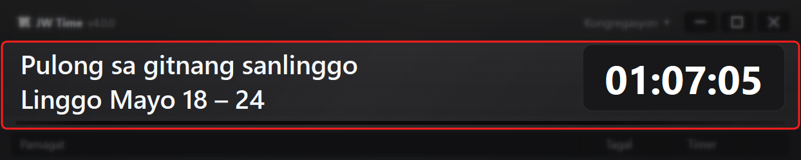
Sa itaas na linya ipinapakita ang pamagat ng kasalukuyang bahagi, habang sa ibaba ay ipinapakita ang orasan na may kasalukuyang oras o, kapag nagsimula ka ng timer, ang countdown ng natitirang oras. Sa 12-oras na format, lumalabas din ang suffix na AM/PM sa mas maliit na sukat para mas madaling mabasa.
1.2 · Table ng Timer
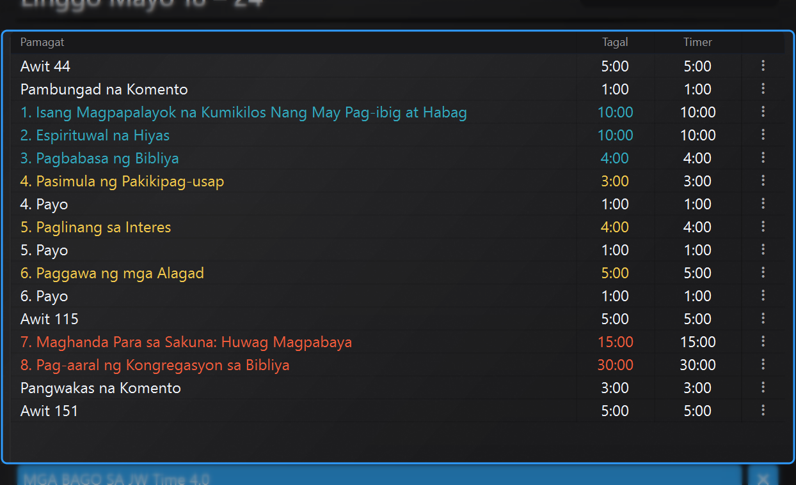
Inililista nito ang iskedyul ng pulong (pamagat, tagal, estado). Awtomatikong nilo-load ang nilalaman batay sa napiling araw: kinikilala ng app kung ito ay pulong sa gitnang sanlinggo o pulong sa weekend at iminumungkahi ang tamang iskedyul. Para sa mga button at mas detalyadong aksyon, tingnan ang seksyon 3 · Pamamahala ng mga timer.
Kung ia-activate mo ang Ipakita ang column na Pagtatapos sa mga pangkalahatang setting, ipinapakita rin ng table kung anong oras matatapos ang kasalukuyang bahagi at ang mga susunod. Hindi ito nakapirming oras sa iskedyul: isa itong projection na ina-update sa real time batay sa kasalukuyang oras, sa natitirang mga timer at sa anumang naipong paglihis.
1.3 · Tinatayang Oras ng Pagtatapos
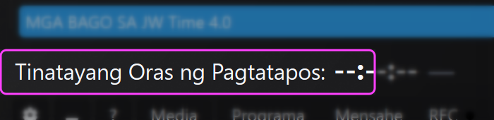
Ipinapakita ang inaasahang oras ng pagtatapos batay sa iskedyul. Sa tabi nito lumalabas ang paglihis:
+m:ss (dilaw sa loob ng 1', pula kapag higit pa) = pagkaantala
-m:ss (berde) = mas maaga
Ina-update nang real time ang oras at indicator. Kung aktibo ang mga adaptive para sa Pag-aaral ng Kongregasyon sa Bibliya / Pag-aaral sa Bantayan, muling kinakalkula ang mga tagal para umabot sa oras ng pagtatapos.
1.4 · Oras ng pause/pagpalit ng tagapagsalita
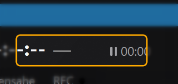
Pinagsama-samang counter hh:mm:ss ng mga teknikal na pause/pagpalit ng tagapagsalita: kinukuha nito ang kabuuang oras kung kailan naka-pause ang timer. Habang naka-pause, nananatiling nakahinto ang timer ng bahagi samantalang tumataas ang counter na ito. Isang click sa indicator ang nagre-reset sa kabuuan.
1.5 · Pangunahing mga key sa pamamahala ng timer
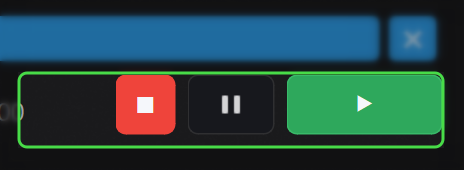
Mga kontrol para simulan, ihinto at pamahalaan ang mga timer: Stop (pula), Pausa, at Start/Susunod (berde). Ipina-pause ng button na Pausa ang timer ng bahagi (nakatigil ang bilang) habang patuloy na tumataas ang oras ng pause/pagpalit ng tagapagsalita. Para lumabas sa pause, pindutin muli ang Pausa o lumipat sa susunod na bahagi gamit ang Start/Susunod: itatala ang naipong oras sa counter na nasa punto 1.4.
1.6 · Mga Balita (komunikasyon)
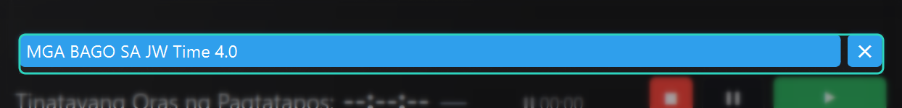
Kapag may opisyal na komunikasyon para sa app, lumalabas sa Pangunahing Screen ang isang kahon/abiso na "Mga Balita". Kapag na-click ito, bubukas ang panel na may buod ng mga update.
1.7 · Mabilisang mga tool
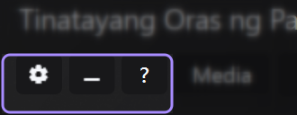
Mabilisang mga button para buksan ang mga setting, i-minimize o ibalik ang window at pumunta sa tulong. Nakahiwalay ang mga ito sa mga operating mode para mas malinaw ang ibabang linya.
1.8 · Mga operating mode
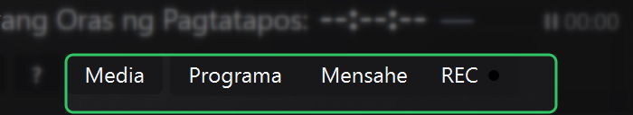
Mula rito maaari kang lumipat sa Window ng Media, pamamahala ng Programa, Mga Mensahe at panel na REC. Ipinapakita ng itim na tuldok sa tabi ng REC ang estado ng recording.
Ipinapaliwanag ng seksyong ito kung paano i-load ang tamang iskedyul para sa linggo, gumawa ng manual na iskedyul kapag kailangan, at mabilis na lumipat sa mga nakaraang linggo, kasalukuyang linggo at susunod na mga linggo.
Bilang default, awtomatikong nilo-load ng app ang iskedyul ng kasalukuyang linggo: ang iskedyul ng pulong sa gitnang sanlinggo mula Lunes hanggang Biyernes at ang iskedyul ng pulong sa weekend sa Sabado at Linggo.
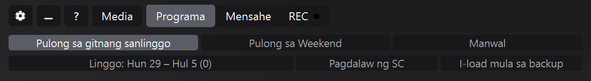
2.1 · Awtomatikong pagsasaayos
Pulong sa gitnang sanlinggo: nilo-load ang iskedyul para sa mga araw ng trabaho.
Pulong sa weekend: nilo-load ang iskedyul ng Sabado/Linggo, at hinihingi ang Awit para sa Pahayag Pangmadla.
2.2 · Selector ng linggo at preview ng kalendaryo
Ang button na Linggo ay palaging nagpapakita ng saklaw (hal. "Linggo: 20-26 Okt.") kasama ang badge na nagsasaad ng offset mula sa kasalukuyang linggo (0, +1, -2, atbp.). Isang click ang magbubukas sa compact na kalendaryo para tumalon diretso sa gustong linggo nang hindi paulit-ulit na pinipindot ang mga button na Nakaraan/Susunod.
Agad na badge: makikita mo kung tinitingnan mo ang kasalukuyan, darating o nakaraang linggo.
Lingguhang kalendaryo: direktang piliin ang mga linggo sa praktikal na paraan.
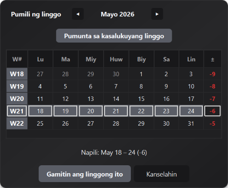
2.3 · Pagdalaw ng tagapangasiwa ng sirkito
Ang button na Pagdalaw ng tagapangasiwa ng sirkito, na nasa pagitan ng selector ng Linggo at I-load mula sa backup, ay binabago ang iskedyul kapag may pagdalaw ng tagapangasiwa ng sirkito. Kapag pinindot, umiilaw ang button (ON) at awtomatikong inihahanda ng app ang mga espesyal na bahagi para sa pagdalaw.
Pulong sa gitnang sanlinggo: ang Pag-aaral ng Kongregasyon sa Bibliya ay ginagawang nakapirming 30 minutong bahagi na may pamagat na "Pagdalaw ng tagapangasiwa ng sirkito".
Pulong sa weekend: nagdaragdag ng nakalaang item pagkatapos ng Pag-aaral sa Bantayan at inaangkop ang mga tagal para masunod ang oras ng pagtatapos.
Mga kulay at nakalaang mga abiso: gumagamit ang row ng Pagdalaw ng tagapangasiwa ng sirkito ng sariling palette at inihahanda ang partikular na pangwakas na Awit.
Mabilis na pag-deactivate: kapag pinatay ang toggle, agad na bumabalik ang table sa standard na iskedyul nang hindi nawawala ang iba pang mga pagbabago.
2.4 · I-load mula sa backup
Ang button na I-load mula sa backup ay nagbubukas ng listahan ng mga pakete ng programa na naka-save nang lokal, nakaayos ayon sa petsa, uri ng pulong at wika. Mainam ito para gumana offline o ibalik ang mga programang naihanda na sa ibang PC.
Masusing listahan: ipinapakita ng bawat row ang petsa ng simula ng linggo, uri (pulong sa gitnang sanlinggo/pulong sa weekend) at wika.
Ligtas na pag-load: sinusuri ang mga package at direktang inilalapat sa kasalukuyang table.
Malinaw na mga mensahe: kung walang available na backup, agad na nagpapakita ang app ng abiso.
2.5 · Mode ng Manual na Listahan
Ginagamit ang manual na listahan kapag ang iskedyul ay hindi nanggagaling sa lingguhang programa o kapag gusto mong maghanda ng espesyal na programa. Maaari kang gumawa o magbago ng mga item gamit ang nakalaang window sa pag-edit, itakda ang uri, pamagat at tagal, at i-save ang resulta para magamit muli sa ibang pagkakataon.
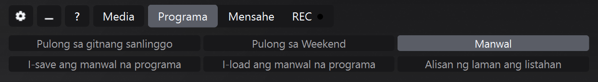
2.5.1 · Panel ng Manwal
Manwal: ina-activate ang custom na iskedyul at ipinapakita ang mga nakalaang command sa ilalim ng selector ng programa.
I-save ang manual na listahan: ine-export ang kasalukuyang iskedyul sa isang file na magagamit muli o maililipat sa ibang PC.
I-load ang manual na listahan: ini-import ang naka-save na listahan at ina-update ang table, Contatempo at nakakonektang Media.
Alisan ng laman ang listahan: nire-reset ang manual na iskedyul ng kasalukuyang linggo at inaalis din ang manual na media na konektado sa draft na iyon.
2.5.2 · Gumawa at mag-save
I-activate ang manual mode mula sa panel ng Programa.
Gamitin ang mga command ng table para magdagdag, magtanggal o muling ayusin ang mga row; kapag kailangan, binubuksan ng JW Time ang window sa pag-edit ng item.
I-save ang listahan kapag gusto mo itong itabi para sa ibang pagkakataon.
Kapag nag-save ka, tatanungin ka ng JW Time kung ano ang isasama sa file .jwtimeplan. Piliin ang Manual na programa + media kung gusto mo ring ilipat ang mga lokal na file, URL at mga grupo ng Window ng Media. Piliin ang Manual na programa ng oras lang kung kailangan mo lang ang iskedyul na may mga pamagat at tagal.
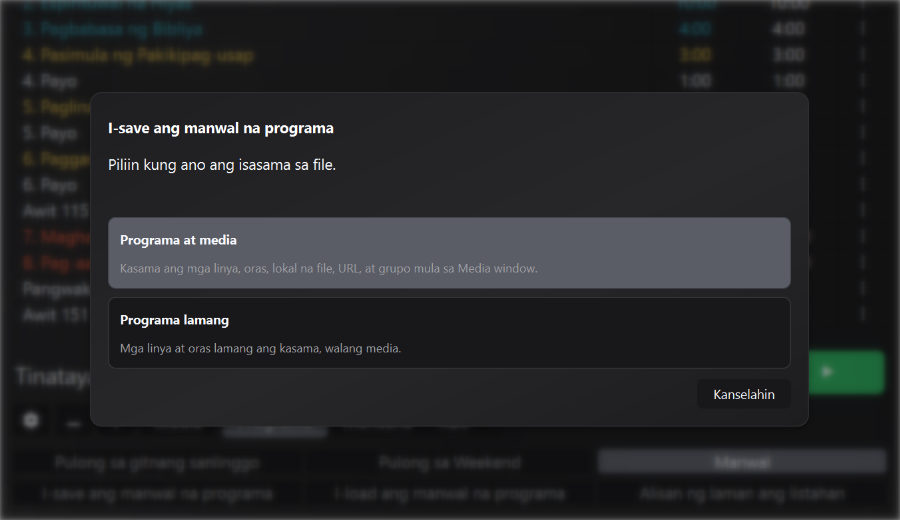
2.5.3 · I-load muli o alisan ng laman ang listahan
Gamitin ang I-load ang manual na listahan para mabawi ang naka-save na iskedyul.
Kung ang listahan ay may mga row na kinikilala bilang mga Awit o standard na bahagi, naglalapat ang JW Time ng magkakatugmang mga kulay at gawi.
Ina-update ang mga nakakonektang window pagkatapos ng pag-load, kaya nananatiling nakaayon ang Contatempo at Media sa table.
Gamitin ang Alisan ng laman ang listahan kapag gusto mong magsimula muli mula sa isang bakanteng iskedyul para sa parehong linggo.
2.5.4 · Nakakonektang media
Kapag nag-uugnay ka ng media sa isang manual na listahan, pinananatili ng pag-save at pag-load ang koneksyon sa inihandang programa. Kapaki-pakinabang ito para sa mga espesyal na pulong, lokal na asamblea o mga programang hindi sumusunod sa standard na linggo.
Kung hindi na available ang isang file, ipinapaalam ito ng app kapag binuksan o ginamit mo ang Window ng Media, para mapalitan mo ito bago ang pulong.
Para magdagdag ng awit, gamitin ang menu ng pagpasok at piliin ang item para sa mga awit. Sa ganitong paraan, tama na itinatala ng JW Time ang numero ng awit, ikinokonekta ang magagamit na media, at inaangkop ng Screen ng Contatempo ang display nang hindi kailangang manu-manong isulat ang pamagat sa row.
Ipinapaliwanag ng seksyong ito ang pangunahing mga operasyon sa pamamahala ng timer — gaya ng pagdaragdag, pagbabago, o pagtanggal ng mga entry — at ang paggamit ng mga command para simulan, lumaktaw, at i-reset.
3.1 · Pangunahing mga operasyon
Menu ng row: buksan ang tatlong tuldok sa kanan para sa mga aksyong available sa napiling bahagi.
Mula sa menu, maaari mong simulan ang row o lumipat sa susunod, magdagdag ng row sa itaas o ibaba, i-duplicate ito, i-reset ito, o tanggalin ito.
Ang mga command Magdagdag ng row sa itaas at Magdagdag ng row sa ibaba ay nagbubukas ng submenu na may Awit, Bahagi/Pahayag at Mga Payo.
Baguhin ang Pamagat/Tagal: i-double click ang cell, pagkatapos ay kumpirmahin.
Mga format ng Tagal: 5 → 5:00, 1:30 → 1:30 minuto.
Pagsisimula at pagpapatuloy:
Simulan ang row sinisimulan ang napiling bahagi.
Kapag may kasalukuyang row, ang command ay nagiging Lumipat sa susunod.
Pinamamahalaan ng Stop/Pause ang kasalukuyang timer mula sa ibabang bar.
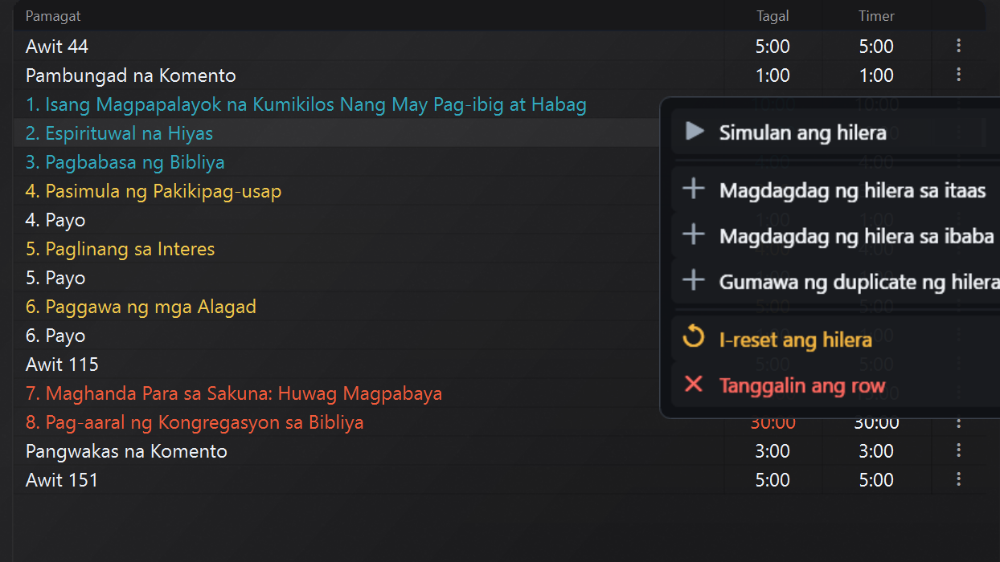
3.2 · Mga update sa real time
Patuloy na nag-a-update ang timer: ipinapakita ng pangunahing countdown sa itaas ang natitirang oras ng aktibong bahagi, habang nananatiling naka-highlight sa table ang katumbas na row. Ginagamit din ng kulay ng itaas na bar ang kulay ng kasalukuyang bahagi.
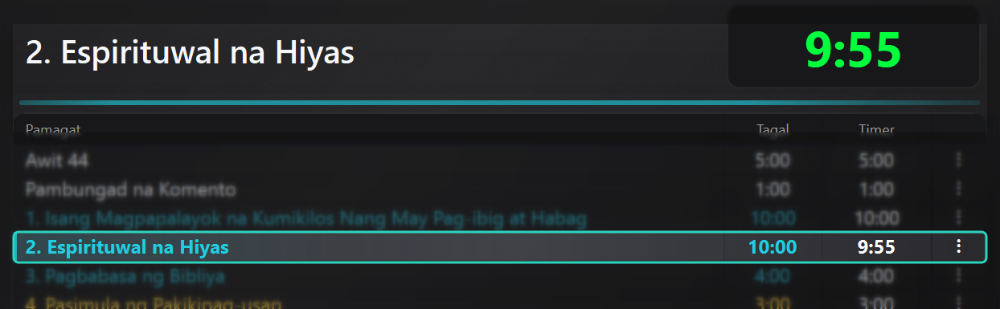
Kung babaguhin mo ang tagal o lilipat sa susunod na bahagi, agad na muling kinakalkula ang Tantiyang Oras ng Pagtatapos. Dahil dito, makokontrol mo ang delta ng pagkaaga/pagkaantala at ang naipong oras para sa mga pause o pagpapalit ng tagapagsalita nang hindi nagbubukas ng ibang panel.
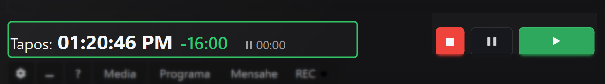
3.3 · Awtomatikong pag-aangkop — Pag-aaral ng Kongregasyon sa Bibliya at Pag-aaral sa Bantayan
Kung naka-on sa Mga Setting ang adaptive na Pag-aaral ng Kongregasyon sa Bibliya at/o adaptive na Pag-aaral sa Bantayan, dinamikong inaangkop ng app ang tagal ng napiling bahagi para mapanatili ang oras ng pagtatapos ng pulong. Nalalapat lang ang pag-aangkop sa mga bahaging naka-on ang opsyon at maaari nitong awtomatikong dagdagan o bawasan ang mga minuto batay sa naipong pagkaaga/pagkaantala. Sa larawan, ibinubukod ang apektadong row at naka-highlight sa orange ang inangkop na halaga, kaya agad na malinaw kung aling timer ang naitama. Maaari ka pa ring manu-manong makialam: muling kinakalkula ng adaptive function mula sa bagong sitwasyon.
Pinagsasama ng Window ng Media ang mga nilalamang kaugnay ng linggo: mga awit, video, larawan, at mga reperensiyang kapaki-pakinabang sa bahagi. Makatutulong ito sa operator na ihanda ang pulong, suriin ang available na nilalaman, at simulan ang mga ito kapag kailangan.
Tala sa paggamit: Ang Window ng Media ay nagbibigay sa operator ng pantulong na tool para maghanda, magsuri, at mamahala ng nilalamang multimedia na available na. Ang praktikal na paggamit nito ay nakadepende sa lokal na pangangailangan at dapat palaging gawin kaayon ng mga tagubilin ng kongregasyon at ng mga kaayusan. Kapag may teknikal na pangangailangan, maaari rin itong gamitin bilang pantulong o reserbang solusyon.
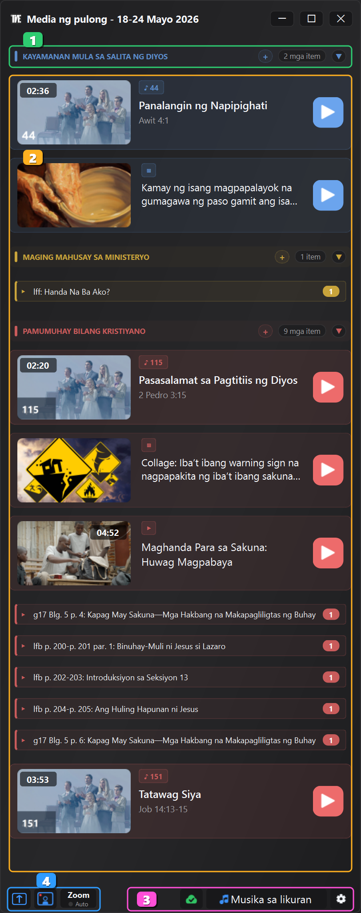
4.1 · Babala at mga seksyon ng media
Ipinapaalam ng area 1 kapag hindi pa available offline ang opisyal na media ng linggo. Maaari mo itong i-download agad o ipagpaliban. Maaari ring i-automate ang parehong kilos mula sa mga setting
seksyon 13 · Media, sa pamamagitan ng pag-on sa awtomatikong pag-download ng opisyal na media. Sa ilalim ng babala makikita mo ang mga seksyon ng iskedyul, na may may-kulay na pamagat, bilang ng mga elemento, at mabilis na mga command.
Tala: Ang pag-download ng opisyal na media ay nangangailangan na pahintulutan ng network ang JW Time na ma-access ang jw.org at ang mga resource na ginagamit para sa media. Ang alternatibong download na ipinakilala para sa mga programa ay hindi available para sa media. Kung bina-block ng router, firewall, DNS, o content filters ang mga relihiyosong site o ang access ng JW Time, maaaring hindi ma-download ang opisyal na media; sa ganitong kaso maaari kang gumamit ng media na available na offline o manu-manong magdagdag ng lokal na file.
4.2 · Listahan ng nilalaman
Ang area 2 ay naglalaman ng mga card na may preview, pamagat, reperensiya, at button para simulan. Sinusunod ng mga kulay ang mga area ng iskedyul, kaya mabilis mong mahahanap ang mga awit, larawan, video, at reperensiyang kaugnay ng bahagi.
Mula sa context menu, maaari mong manu-manong markahan ang isang elemento bilang nagamit o hindi nagamit. Kung ang opsyong
Palabuin ang media na nagamit na ay naka-on, nananatiling madaling makilala ang nagamit nang nilalaman sa mas banayad na estilo. Kasama rin sa mga window para pumili ng opisyal na video, audio, at larawan ang mode na Pangkalahatan, kapaki-pakinabang kapag kailangan mong maghanap sa labas ng kasalukuyang kategorya.
4.3 · Ibabang bar
Pinagsasama ng area 3 ang mabilis na mga command ng Window ng Media: na-download na nilalaman, paunang tingin, pag-synchronize, musika sa likuran, at nakalaang mga setting. Nananatili ito sa ibaba para maabot kahit mahaba ang listahan.
4.4 · Mga kontrol ng Zoom
Pinagsasama ng area 4 ang mga command ng Zoom sa Window ng Media. Idinisenyo ang mga ito para sa mga nagpapakita rin ng media sa videoconference at gumagamit ng Pampublikong Screen sa monitor ng bulwagan.
Pagbabahagi: ipinapadala sa Zoom ang shortcut na naka-configure para simulan o ihinto ang pagbabahagi.
Ipakita/Itago ang Zoom: ginagamit ito para ipakita sa pampublikong monitor ang mga tagapagsalita o ang window ng Zoom. Pansamantalang itinatago ng JW Time ang Pampublikong Screen at ipinapakita ang nasa ilalim nito: kaya ang window ng mga tagapagsalita sa Zoom, o isang naduplicate na screen na may Zoom, ay dapat nakaposisyon na sa likod ng Pampublikong Screen bago pindutin ang key.
Zoom Auto: ina-activate nito para sa session ang automation ng Zoom. Kapag nagsimula ka ng media, maaaring awtomatikong ipadala ng JW Time ang shortcut sa pagbabahagi at, kung naka-configure, ihinto ito sa dulo.
Bago gamitin ang mga key na ito, mag-configure sa Zoom ng global shortcut para sa screen sharing at ilagay ang parehong kombinasyon sa seksyon 14 · Zoom. Kung hindi magkapareho ang dalawang shortcut, ipinapadala ng JW Time ang command pero hindi tutugon ang Zoom gaya ng inaasahan.
4.5 · Musika bago ang pulong at musika sa likuran
Ang panel na Background ay namamahala sa musika bago ang pulong at, kung naka-configure, pati pagkatapos ng pulong, nang hindi ito hinahalo sa media ng iskedyul. Habang nagpapatugtog, ipinapakita nito ang kasalukuyang kanta, susunod na kanta, progreso, at tagal.
Maaari mong simulan, i-pause, lumipat sa nakaraang o susunod na kanta, i-on ang random playback, at buksan ang playlist. Ang mga setting ng musika, kasama ang awtomatikong kilos at fade, ay kino-configure mula sa panel na
seksyon 13 · Media.
Pinaghihiwalay ng JW Time 4.0 ang mga display: ang Pampublikong Screen ay para sa nilalamang nakikita ng bulwagan, habang ang Screen ng Contatempo ay nananatiling nakalaan sa mga sumusubaybay sa oras.
5.1 · Pampublikong Screen
Ipinapakita ng Pampublikong Screen ang countdown, mensahe ng pagbati, taunang teksto, logo, at visual na nilalaman sa hiwalay na window.
Bago ang pulong: ipinapakita ang countdown at ang naka-configure na teksto.
Habang nagpapatuloy ang pulong: maaari itong manatiling available para sa pampublikong nilalaman o mga nakalaang eksena.
Ipinapakita ng Screen ng Contatempo ang orasan, countdown ng kasalukuyang bahagi, mga mensahe para sa tagapagsalita, at mga status na kaugnay ng pamamahala ng oras. Ito ang pinakanaaangkop na view para sa podium, sa nangangasiwa sa pulong, o sa mga tagabantay ng oras.
Display sa napiling monitor o malayang window.
Timer ng kasalukuyang bahagi at kontekstuwal na impormasyon.
Mga mensahe sa buong screen o bahagi lang na ipinadala mula sa pangunahing window.
Ang pag-aangkop ng layout ay tinalakay nang hiwalay sa seksyon 5.3 · Pag-aangkop ng Screen ng Contatempo, kaya nananatiling hiwalay ang pang-araw-araw na paggamit ng screen sa mga graphic setting.
5.3 · Pag-aangkop ng Screen ng Contatempo ↑ Talaan
Maaari kang magsimula sa preset na available na o baguhin ang layout ayon sa iyong pangangailangan. May sariling mga setting ang Pampublikong Screen sa seksyon 12 · Screen; dito nakatuon ang gawain sa layout ng Contatempo.
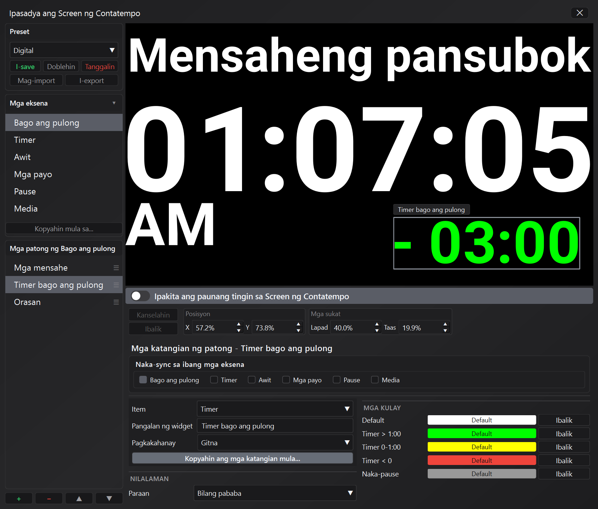
Magsimula sa isang preset
Ang preset ay panimulang layout.
Maaari kang pumili ng preset sa seksyon 9 · Pangkalahatan at gamitin ito nang walang pagbabago, o buksan ang editor ng pag-aangkop para baguhin ito.
Pumili ng eksena
Ang layout ay nakaayos sa mga eksena.
Ang bawat eksena ay tumutugma sa ibang sitwasyon ng Screen ng Contatempo. Dahil dito, maaaring magpakita ng ibang layout batay sa sandali o sa uri ng bahaging ipinapakita.
Bago gumawa ng mga pagbabago, palaging tingnan kung aling eksena ang napili.
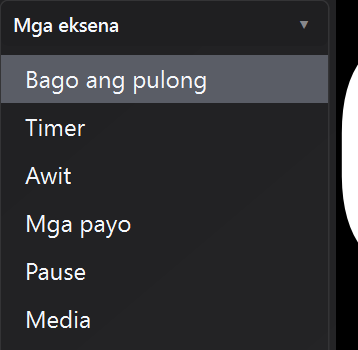
Mga available na uri ng patong
Kapag pinindot mo ang + sa panel ng Mga Patong, ipinapakita ng JW Time ang mga uri ng elementong maaari mong idagdag sa eksena. May ilang patong na bumabasa ng totoong datos ng pulong at awtomatikong nagbabago; ang iba naman ay para buuin ang grapikong layout.
Hindi praktikal na ipakita sa manual ang lahat ng katangian ng bawat patong, dahil nagbabago ang panel ng mga katangian batay sa napiling uri. Sa halip, makikita mo rito kung ano ang ginagawa ng bawat patong at kailan ito gagamitin.
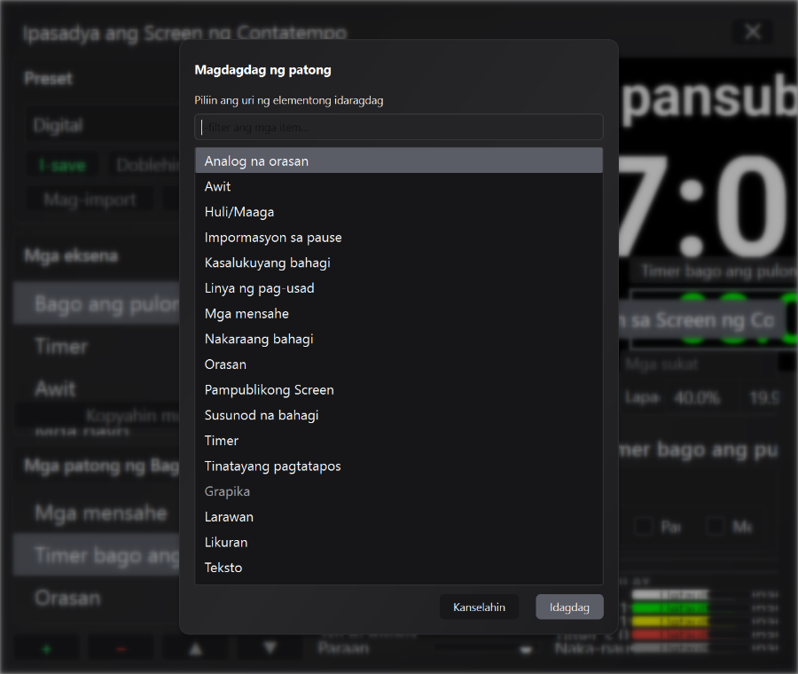
Pangunahing mga dinamikong patong
Timer: ipinapakita ang oras ng aktibong bahagi. Maaari itong itakda bilang countdown o count-up.
Awit: ipinapakita ang impormasyon ng awit kapag ang eksena ay tungkol sa awit.
Mga Mensahe: ipinapakita ang mga mensaheng ipinadala mula sa pangunahing window, sa buong screen man o sa bahagyang format.
Orasan: ipinapakita ang digital na oras.
Analog na orasan: nagdaragdag ng graphic na orasan na maaaring iangkop.
Impormasyon tungkol sa pulong
Kasalukuyang bahagi: ipinapakita ang pamagat ng kasalukuyang bahagi.
Susunod na bahagi: ipinapakita ang susunod na bahagi, kapaki-pakinabang para maghanda sa pagpapalit.
Nakaraang bahagi: ipinapakita ang impormasyon tungkol sa katatapos na bahagi, kapag nakalaan ito sa layout.
Tantiyang pagtatapos: ipinapakita ang oras ng pagtatapos na kinakalkula ng app.
Pagkaantala/Pagkaaga: ipinapakita ang delta kumpara sa nakaplanong oras.
Impormasyon sa pause: ipinapakita ang impormasyong kaugnay ng mga pause o teknikal na oras.
Bar ng progreso: ipinapakita nang graphic ang pag-usad ng oras.
Malayang mga grapikong patong
Background: nagdaragdag ng may-kulay na kahon, kapaki-pakinabang para gumawa ng mga banda, area na may contrast, o visual na lalagyan.
Teksto: nagdaragdag ng pasadyang nakapirming teksto.
Larawan: nagdaragdag ng logo o dekoratibong larawan.
Ang mga patong na Background, Teksto at Larawan ay maaaring idagdag nang maraming beses. Para sa ibang mga patong, kung mayroon nang elementong kapareho ang uri, iminumungkahi ng editor na ikonekta ito sa ibang eksena o gumawa ng hiwalay na elemento kapag pinapayagan.
Baguhin ang layout
Sa editor, maaari mong baguhin ang mga patong na nasa napiling eksena.
Para sa bawat patong, maaari mong ayusin ang posisyon at sukat sa tatlong paraan:
gamit ang mouse, sa pamamagitan ng paglipat o pagbabago ng laki ng kahon sa preview
gamit ang keyboard, gamit ang mga arrow para ilipat ito
gamit ang mga value ng Posisyon at Sukat na ipinapakita sa ilalim ng preview
Kinokontrol ng mga value na X at Y ang posisyon ng patong.
Kinokontrol ng mga value na Lapad at Taas ang sukat ng patong.
Ipinapahayag ang lahat ng value na ito bilang porsiyento.
Sa panel ng mga patong, maaari mo ring pamahalaan angayos ng pagkakapatong: maaaring nasa ibabaw o ilalim ng iba ang bawat patong, kaya natutukoy kung alin ang lalabas sa harap kapag may magkakapatong. Maaari mong baguhin ang ayos sa pamamagitan ng pag-drag ng mga patong sa listahan o paggamit ng mga button na
▲ at ▼ sa ilalim nito.
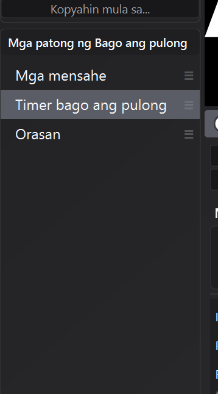
Ilipat, baguhin ang laki, at ayusin ang pagkakasunod ng mga patong
Pagkatapos pumili ng patong, maaari mong:
i-drag ito gamit ang mouse para ilipat sa preview
gamitin ang mga arrow key ng keyboard para ayusin ang posisyon nito (mga arrow: 0,5% — Shift: 2,0% — Ctrl: 0,1%)
i-drag ang mga gilid o sulok ng kahon para baguhin ang laki nito
Sa ilalim ng preview, makikita mo ang mga numeric control na X, Y, Lapad at Taas
para tumpak na ayusin ang posisyon at sukat.
Pagkatapos ng mga pagbabago, i-save ang layout at i-apply ito. Maaari mong buksan muli ang editor anumang oras para i-update ito.
Ang function na Mga Mensahe ay nagbibigay-daan na makipag-ugnayan nang maingat at malinaw sa tagapagsalita habang nagpapatuloy ang pulong, para mabigyan siya ng paalala o tagubilin nang hindi pinuputol o iniistorbo ang takbo ng bahagi. Lumalabas ang mga mensahe sa screen ng Contatempo, kaya nakikita ito ng tagapagsalita sa tunay na oras nang walang istorbo.
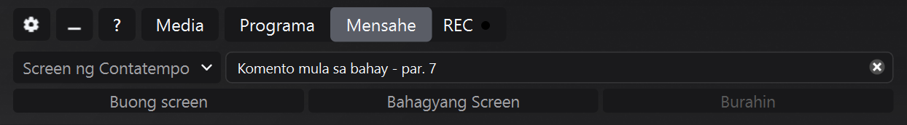
6.1 · Mensahe sa buong screen
I-click ang lugar kung saan nakasulat ang Ilagay ang mensahe.
Ilagay ang text.
Pindutin ang Buong screen → lalabas ang text sa buong screen sa monitor ng Contatempo.
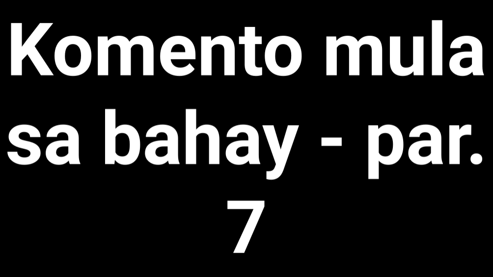
6.2 · Mensahe sa bahagi ng screen
I-click ang lugar kung saan nakasulat ang Ilagay ang mensahe.
Ilagay ang text.
Pindutin ang Bahagi ng screen → lalabas ang text sa window ng Contatempo nang hindi ito lubusang tinatakpan, kaya makikita ng tagapagsalita ang mensahe at ang timer.
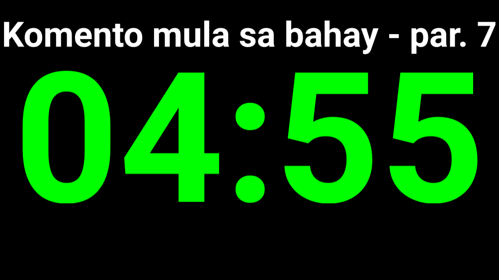
6.3 · Mirror ng Contatempo
Kapag nagpapadala ng mensahe, awtomatikong lumalabas ang isang preview window na maaaring baguhin ang laki at ilipat, at eksaktong ipinapakita nito ang nakikita ng tagapagsalita sa monitor ng Contatempo. Dahil dito, masusuri sa tunay na oras kung paano ipinapakita ang mensahe at timer.
Ang button na REC ay nasa ibabang bar katabi ng Programa at Mensahe. Ipinapakita ng tuldok sa tabi ng text ang katayuan ng recording (naghihintay, aktibo, naka-pause, o nagko-convert sa MP3), habang nagbibigay ang panel ng REC ng mabilis na mga kontrol para buksan ang folder na JWTimeREC, pamahalaan ang mga manual na recording, at i-monitor ang mga audio level ng PC at mikropono.
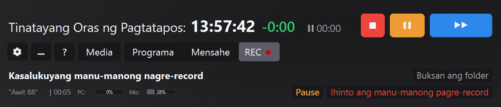
7.1 · Mga indicator at katayuan ng button
Naghihintay: nananatiling kulay abo ang tuldok at ipinapakita ng panel ang "Naghihintay" / "Walang aktibong recording".
Kasalukuyang nagre-record: nagiging pulang kumikislap ang tuldok at ipinapakita ng panel ang "Kasalukuyang nagre-record" kasama ang pamagat at timer ng bahagi.
Pause: nagiging orange ang tuldok; nakahinto pansamantala ang recording at maaaring ipagpatuloy.
Pag-convert sa MP3: nagiging asul ang tuldok at nananatiling hindi aktibo ang button hanggang matapos ang pag-export ng file.
7.2 · Mabilis na mga kontrol ng REC
Pinagsasama ng panel ng REC ang mga kontrol na magagamit nang hindi pumapasok sa mga setting:
Buksan ang folder: direktang binubuksan ang directory na JWTimeREC na naglalaman ng mga recording.
I-on/I-off ang recording: pinapagana o pinahihinto ang manual na recording nang hindi pumapasok sa mga setting.
I-pause/Ipagpatuloy: button na nakikita habang nagre-record para pansamantalang ihinto ang audio (hal. mga panalangin) at ipagpatuloy ito sa parehong file.
Inline na impormasyon: sa ilalim ng status, lumalabas ang pamagat ng aktibong row at ang na-update na tagal.
Mga awtomatikong mensahe: agad nitong ipinapakita kapag naka-disable ang recording o kapag may kasalukuyang pag-convert.
7.3 · Lugar ng switch na may mga antas ng audio
Kapag binuksan mo ang REC sa ibabang bar, lumalabas ang isang panel na palaging nakikita, kasama ang estado ng pagre-record at tagasukat ng antas ng audio. Dito maaari mong simulan/ihinto ang manu-manong mga recording, subaybayan ang mga antas ng PC/Mic, at buksan ang folder na JWTimeREC sa isang pag-click lang.
Kapag aktibo ang Server Web, maaari mo itong buksan mula sa ibang device sa parehong lokal na network gamit ang browser. Nagbibigay-daan ito na ipakita ang Contatempo sa mga projector, tablet, o external na computer, at kapaki-pakinabang ito para sa tagapangulo na sumusubaybay sa timer ng iba't ibang bahagi.
Para sa kumpletong configuration ng Server Web, remote na kontrol, remote na link, at QR, tingnan ang seksyon 15 · Koneksyon at Server.
8.1 · Ipakita ang Monitor Web sa lokal na network
Mula sa browser, maaari mong:
Ipakita ang timer at Contatempo sa buong screen.
I-print ang iskedyul.
Subaybayan ang pag-usad ng mga oras sa tunay na oras.
Magsagawa ng mga operasyon nang remote sa timer at programa, kung aktibo ang remote na kontrol.
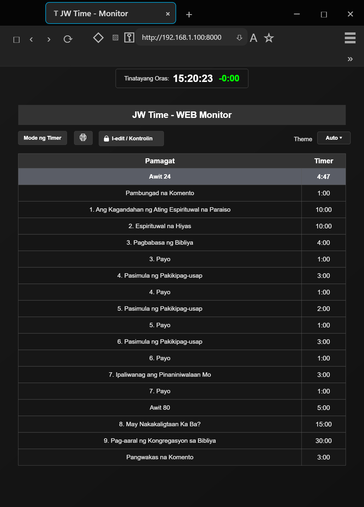
8.2 · Kontrolin ang timer at programa mula sa browser
Kung aktibo ang remote na kontrol, maaari kang kumilos sa timer at programa mula sa browser nang hindi nasa harap ng pangunahing computer.
Nakadepende ang mga available na operasyon sa naka-configure na mga permiso at maaaring kabilang ang:
pagsisimula ng timer
pag-pause at pagpapatuloy
paghinto
kontrol sa programa/iskedyul
pagbabago ng mga tagal o ng mga value na available sa iskedyul, kung pinapahintulutan ito ng awtorisadong role
Maaari mong buksan ang Server Web sa pamamagitan ng paglalagay ng address na ipinapakita sa app, o paggamit ng QR kung available.
Depende sa configuration, maaaring may iba't ibang antas ng access, halimbawa para sa pagtingin lamang o para sa kontrol at pagbabago. Kung naka-configure, maaaring mangailangan ng PIN ang access.
8.3 · Remote na access para sa mga pulong sa videoconference
Kapag ang taong kailangang sumubaybay o kumontrol sa JW Time ay wala sa parehong lokal na network, maaari kang gumawa ng pansamantalang remote na link. Kapaki-pakinabang ang sitwasyong ito para sa mga pulong sa videoconference, remote na tulong, o pamamahala mula sa device na nakakonekta sa ibang network.
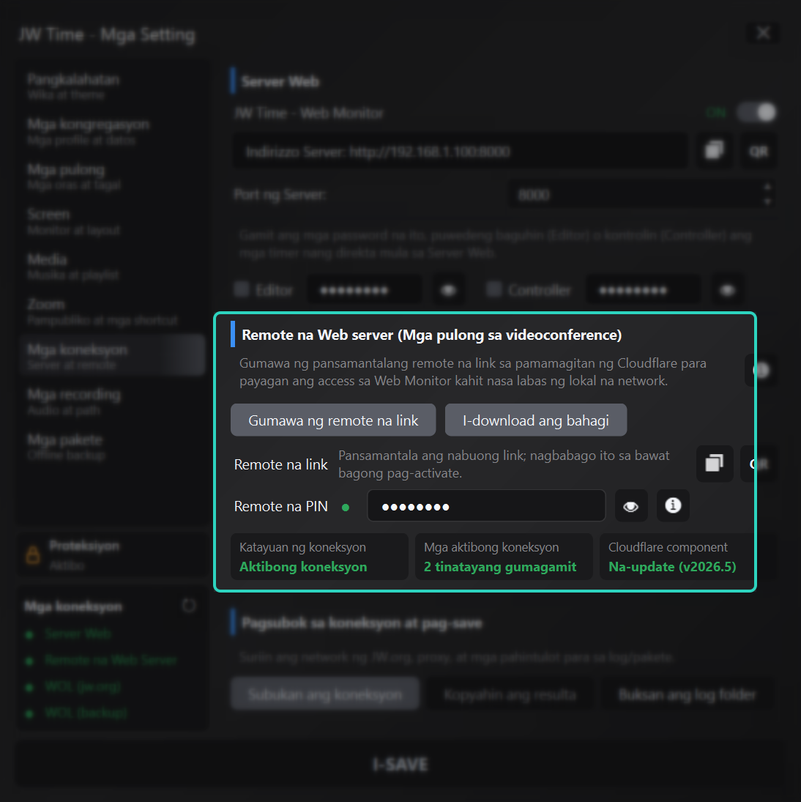
Parehong web interface: binubuksan ng remote na link ang Monitor Web mula sa browser, gaya ng nangyayari sa lokal na network.
Pansamantalang link: nagbabago ang remote na koneksyon sa bawat pag-activate at hindi dapat ituring na permanente.
Remote na PIN: kapag naka-configure, pinoprotektahan nito ang mga function na maa-access mula sa labas ng lokal na network.
Paggamit kasama ng videoconference: nagbibigay-daan sa mga sumusubaybay sa pulong mula sa labas ng network na tingnan o kontrolin ang programa ayon sa itinakdang mga permiso.
Ang bahaging pang-operasyon ay kino-configure sa seksyon 15.2 · Remote na Server Web. Nananatiling hiwalay ang mga setting ng Zoom: pinamamahalaan ng Zoom ang pagbabahagi at mga shortcut, habang ang remote na link ay tungkol sa Monitor Web.
Bahagi II · Mga Panel ng Setting
Sa bahaging ito, maaari mong i-configure ang paggana ng app: mga pangkalahatang setting, profile ng kongregasyon, mga pulong, Screen ng Contatempo, Media, Zoom, Monitor Web at Server, Recording, at Backup at Pag-restore.
Inilalapat ng button na I-save ang lahat ng pagbabago.
Mga wika ng mga programa: tinutukoy kung saang wika ida-download o ipapakita ang lingguhang iskedyul.
Piliin ang tema: itinatakda ang tema ng hitsura ng app.
Scale ng interface: ina-adjust ang laki ng mga text at kontrol; mailalapat ang pagbabago pagkatapos ng restart.
Format ng oras: nagpapalit sa pagitan ng 24h format at 12h AM/PM format.
Pamamahala ng timer
Awtomatikong pause: awtomatikong naglalagay ng pause sa pagitan ng isang bahagi at ng susunod kapag pinindot mo ang Start/Next.
Ipakita ang column na Wakas: ipinapakita sa talahanayan ang inaasahang oras ng pagtatapos ng kasalukuyang bahagi at ng mga susunod, na kinakalkula sa tunay na oras mula sa kasalukuyang oras, mga natitirang timer, at anumang naipong paglihis.
Pagsisimula
Simulan kasabay ng Windows: Awtomatikong binubuksan ang JW Time kapag nag-sign in ka sa Windows.
Mga bago
Ipakita ang mga bago sa pagsisimula: binubuksan sa app ang maikling buod ng mga ipinakilalang function, para mabilis na malaman ng gumagamit ng JW Time kung ano ang sulit subukan.
Maaari mo itong i-disable kapag naging pamilyar na ang grupo sa naka-install na bersyon.
Pinapayagan ng panel na ito na pamahalaan ang mga profile ng kongregasyon. Maaaring panatilihin ng bawat profile ang nakatalagang mga configuration, kaya maaaring umangkop ang JW Time sa iba't ibang konteksto nang hindi kailangang muling i-configure sa bawat pagkakataon ang mga window, media, at layout.
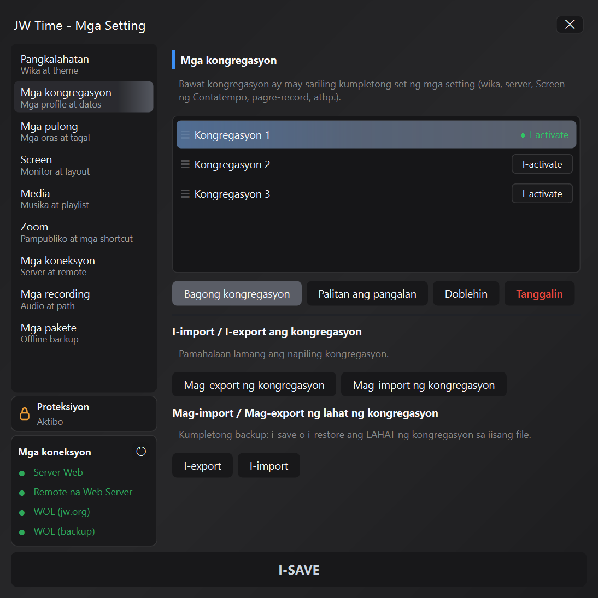
Mga profile ng kongregasyon
Listahan ng mga kongregasyon: ipinapakita ang mga available na profile. Pinapanatili ng bawat profile ang sarili nitong wika, server, mga screen, recording, media, at setting.
Bagong kongregasyon: gumagawa ng hiwalay na profile na iko-configure.
Palitan ang pangalan: binabago ang pangalan ng napiling profile nang hindi nawawala ang mga setting.
I-duplicate: gumagawa ng kopya ng kasalukuyang profile, na kapaki-pakinabang kapag magkatulad ang dalawang configuration.
Tanggalin: inaalis ang napiling profile kapag hindi na ito kailangan.
Mag-import / Mag-export
I-export ang kongregasyon: sine-save lamang ang napiling profile.
I-import ang kongregasyon: nilo-load ang profile na na-export dati.
I-export: gumagawa ng kumpletong backup ng lahat ng kongregasyon.
I-import: nire-restore ang backup na naglalaman ng maraming kongregasyon.
11 · Mga pulong (Timer ng Simula ng Pulong) ↑ Indeks
Ginagamit ang panel na ito para i-program ang countdown ng simula ng pulong sa Pampublikong Screen. Itinatakda mo ang araw, oras, at pagpapauna (sa minuto) kung kailan mo gustong simulan ang countdown.
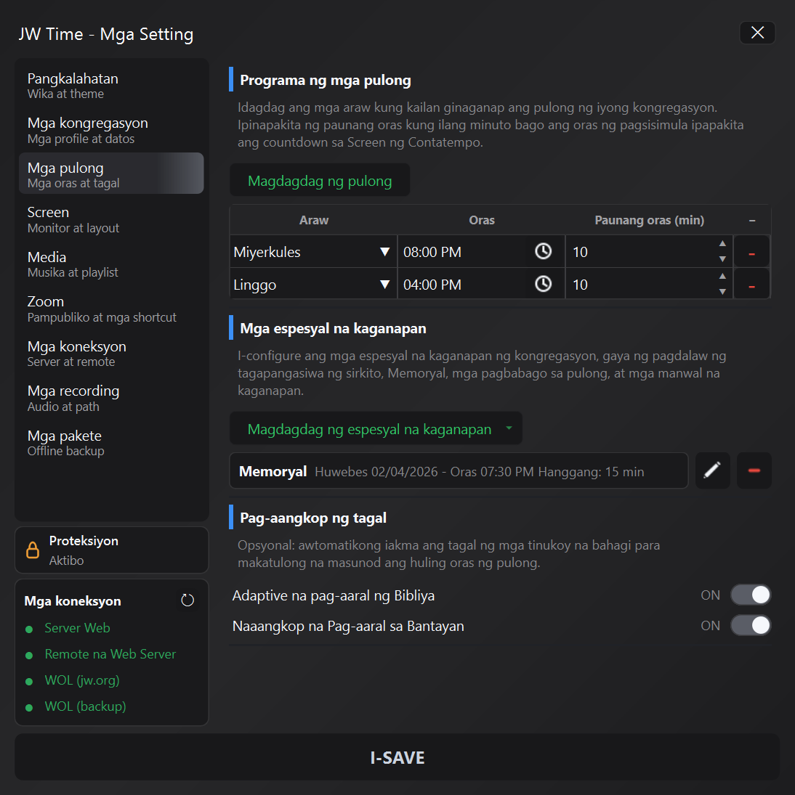
11.1 · Pag-iskedyul (Araw · Oras · Pagpapauna)
Magdagdag ng pulong: naglalagay ng bagong row sa talahanayan ng mga oras.
Araw: piliin ang araw ng linggo kung kailan ginaganap ang pulong.
Oras: itinatakda ang oras ng pagsisimula ng pulong.
Pagpapauna (min): kung ilang minuto bago ang itinakdang oras dapat lumabas ang countdown sa Pampublikong Screen.
-: tinatanggal ang row ng oras na hindi na kailangan.
11.2 · Mga espesyal na event
Magdagdag ng espesyal na event: gumagawa ng mga event gaya ng pagdalaw ng tagapangasiwa ng sirkito, Memoryal, o mga manual na event.
Pagdalaw ng SC: inilalapat ang mga nakatalagang tuntunin at oras para sa pagdalaw.
Memoryal: nagtatala ng espesyal na appointment na may tiyak na petsa at oras.
Baguhin / tanggalin: pinapayagan ng mga button sa kanan na i-update o alisin ang event.
11.3 · Pag-aangkop ng mga tagal
Adaptive na Pag-aaral sa Bibliya: awtomatikong ina-adjust ang Pag-aaral ng Kongregasyon sa Bibliya para makatulong na masunod ang oras ng pagtatapos.
Adaptive na Pag-aaral sa Bantayan: inilalapat ang parehong logic sa Pag-aaral sa Bantayan.
Tandaan: ang mga oras ng pagsisimula ay ginagamit para sa pampublikong countdown; ang Tinatayang Oras ng Pagtatapos naman ay nakadepende sa iskedyul at sa anumang pag-aangkop ng tagal.
Pinagsasama ng panel na ito ang mga setting para sa Screen ng Contatempo at Pampublikong Screen. Dito mo mapipili kung saan ipapakita ang impormasyon, paano ito ipapakita, at aling mga elemento ang gagawing nakikita habang nagpapatuloy ang pulong.
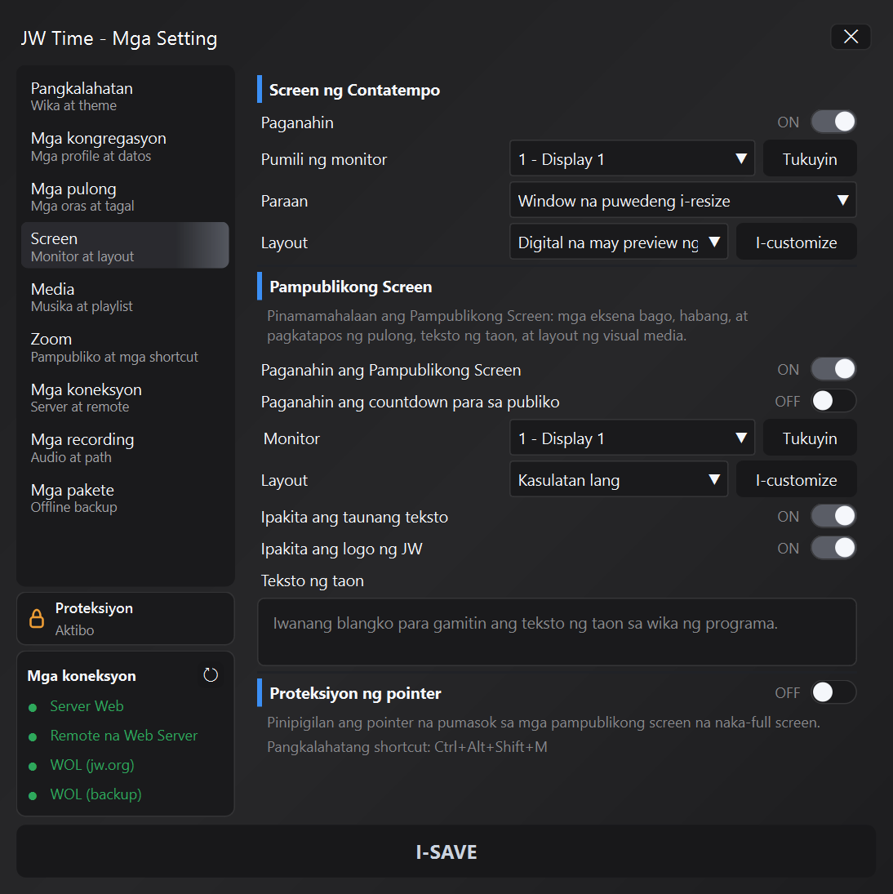
I-enable: ina-activate o idi-deactivate ang Screen ng Contatempo.
Piliin ang monitor: pinipili ang monitor o window kung saan ipapakita ang Contatempo.
Tukuyin: nagpapakita ng reference sa napiling monitor, kapaki-pakinabang kapag maraming screen ang nakakonekta.
Mode: itinatakda kung paano dapat buksan ang Contatempo, halimbawa bilang hiwalay na window.
Transparent na background: ginagawang transparent ang window kapag pinapayagan ito ng mode.
Layout: pinipili ang graphic preset ng Screen ng Contatempo.
I-customize: binubuksan ang editor ng napiling layout.
Pampublikong Screen
I-activate ang Pampublikong Screen: ine-enable ang window para sa content na makikita sa bulwagan.
I-activate ang countdown para sa publiko: ipinapakita ang countdown ng simula ng pulong sa Pampublikong Screen.
Monitor: pinipili kung saan bubuksan ang pampublikong window.
Layout: pinipili ang graphic preset ng Pampublikong Screen.
Ipakita ang taunang teksto: ine-enable o itinatago ang taunang teksto.
Ipakita ang logo ng JW: ipinapakita o itinatago ang logo sa pampublikong scene.
Text ng taunang teksto: nagbibigay-daan na maglagay ng custom na text; kung mananatili itong walang laman, gagamitin ang taunang teksto sa wika ng programa.
Pinamamahalaan ng panel na ito ang paggana ng Window ng Media, ang lokal na cache, at ang mga option na kaugnay ng content na ginagamit habang o pagkatapos ng pulong.
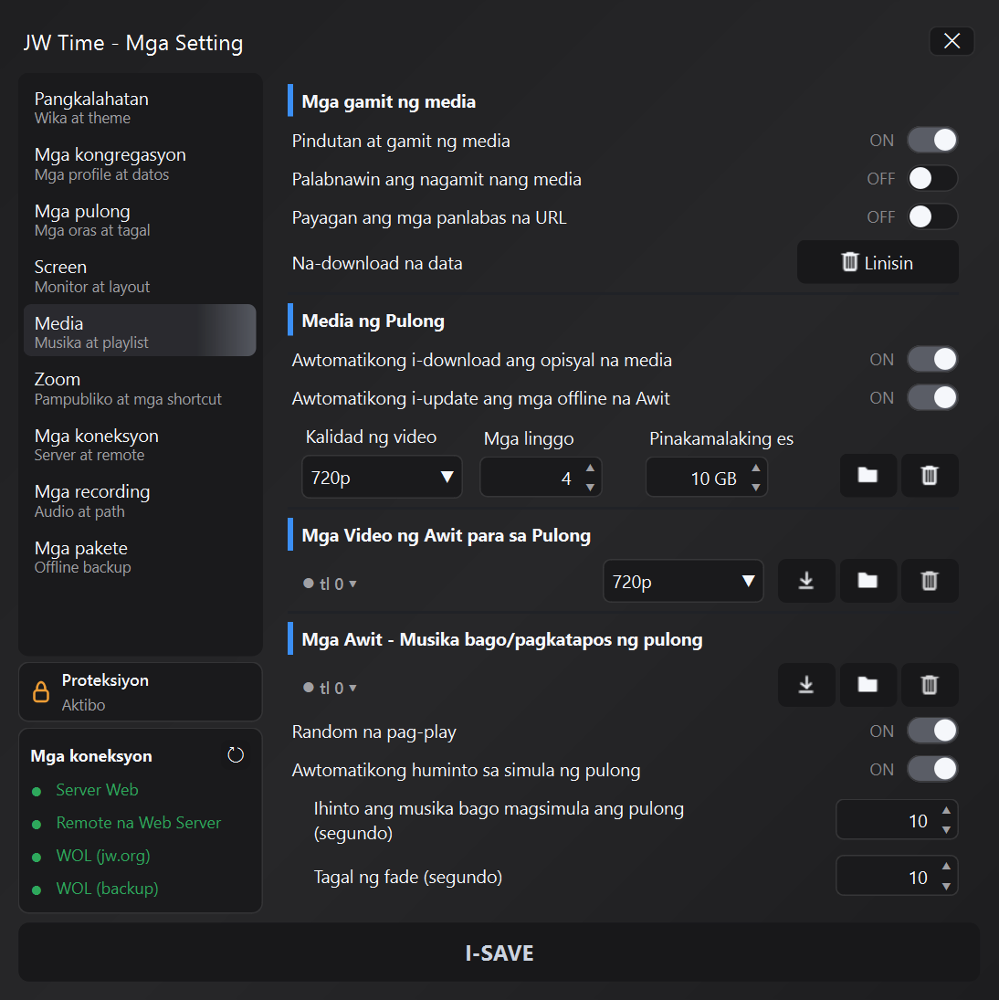
Mga function ng media
Button at function ng media: ipinapakita o itinatago ang button na Media at ine-enable ang mga kaugnay na function.
Pinahusay ang pamamahala ng mga manual na programa at awtomatikong pag-download ng opisyal na media: nananatiling nakaangkla ang mga download sa kasalukuyang linggo at mas malinaw na ipinapakita ang progreso para sa mga susunod na linggo.
Palabuin ang media na nagamit na: ginagawang mas madaling makilala ang content na nagamit na sa Window ng Media.
Payagan ang mga external na URL: pagkatapos kumpirmahin, pinapayagan nitong magdagdag ng mga HTTPS URL sa labas ng jw.org at wol.jw.org at ipakita ang mga ito sa built-in na browser.
Media ng Pulong
Awtomatikong i-download ang opisyal na media: nakakatulong itong maihanda nang maaga ang opisyal na media para sa linggo, kapag pinapayagan ng network.
Awtomatikong i-update ang offline na mga Awit: pinananatiling updated ang catalog ng na-download na mga Awit.
Kalidad ng video: pinipili ang resolution ng opisyal na mga video.
Mga Linggo: ipinapakita kung ilang linggo ang pananatilihin o ihahanda.
Max na espasyo: nililimitahan ang espasyong ginagamit ng media cache.
Folder / tanggalin: binubuksan ang folder ng nilalaman o nililinis ang na-download na mga file.
Mga Awit at musika
Mga Video ng Awit para sa Pulong: pinamamahalaan ang download, kalidad at folder ng mga video ng Awit.
Mga Awit - Musika bago/pagkatapos ng pulong: pinamamahalaan ang musikang ginagamit bilang background.
Random na playback: pinapatugtog ang mga kanta sa random na ayos.
Awtomatikong ihinto sa simula ng pulong: inihihinto ang musika kapag nagsimula ang programa.
Ihinto ang musika bago magsimula ang pulong: itinatakda kung ilang segundo bago ihinto ang background music.
Tagal ng fade: inaayos ang audio fade kapag nagtatapos o nagpapalit ng kanta.
Nasa panel na ito ang mga setting na kapaki-pakinabang kapag ginagamit ang JW Time kasama ng Zoom o ibang mga configuration ng hall na nangangailangan ng nakatalagang audio/video controls. Ang mga opsyon sa ibaba ang nagbibigay ng mga Zoom button sa
seksyon 4 · Window ng Media.
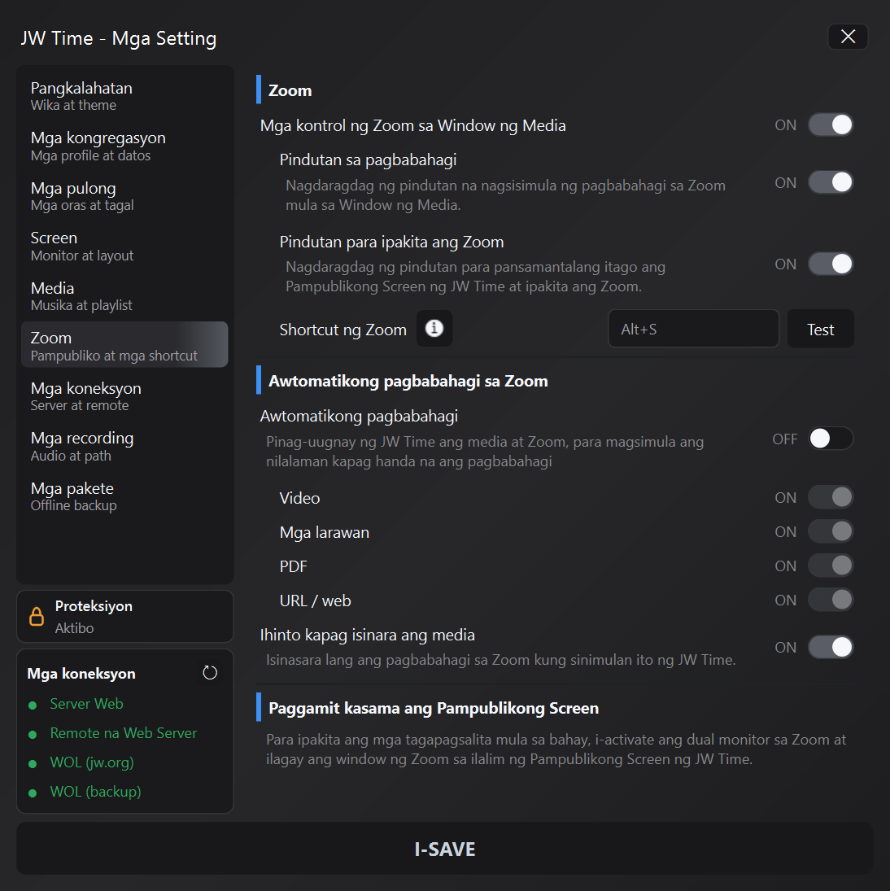
Zoom
Mga kontrol ng Zoom: ipinapakita sa Window ng Media ang mga button na nakalaan para sa Zoom.
Pagbabahagi sa Zoom: pinapagana ang button na nagpapadala sa Zoom ng shortcut para sa pagbabahagi.
Ipakita ang Zoom sa publiko: pinapagana ang button na pansamantalang nagtatago sa Pampublikong Screen ng JW Time para ipakita ang mga tagapagsalita o ang Zoom window na nakaposisyon na sa ilalim, sa monitor ng hall.
Shortcut sa pagbabahagi: dapat kapareho ito ng global shortcut na naka-configure sa Zoom para simulan o ihinto ang screen sharing.
Test: ipinapadala ang shortcut at sinusuri kung binubuksan o binabago ng Zoom ang status ng pagbabahagi.
Shortcut ng Zoom
Hindi pinipili ng JW Time para sa iyo ang window o screen na ibabahagi sa Zoom: ipinapadala nito ang kombinasyon ng mga key na itinakda mo sa panel na ito. Kaya dapat aktibo rin ang parehong shortcut sa mga setting ng Zoom, mas mabuti bilang global shortcut. Kung ibang kombinasyon ang ginagamit mo sa Zoom, ang button na
Pagbabahagi at ang mode na Zoom Auto ay hindi maaasahang gagana.
Bago ang pulong, suriin ang buong daloy: ihanda ang Zoom sa pampublikong monitor, ilagay sa ilalim ng Pampublikong Screen ang window ng mga tagapagsalita o ang duplicated screen ng Zoom, subukan ang shortcut gamit ang Test at pagkatapos gamitin ang mga kontrol mula sa Window ng Media.
Awtomasyon ng media
Awtomatikong pagsisimula: kapag ang button na Zoom Auto ay aktibo sa Window ng Media, sinisimulan nito ang pagbabahagi kapag nagsimula ang isang media.
Ihinto kapag isinara ang media: isinasara ang pagbabahagi sa Zoom kapag isinara o natapos ang media, kung ang pagbabahagi ay sinimulan ng JW Time.
Panimulang pause: inihahanda ang media na naka-pause pagkatapos magsimula ang pagbabahagi.
Pagbabalik ng focus: ibinabalik ang focus sa Window ng Media pagkatapos ng aksyon sa Zoom.
Paggamit sa mga pulong sa videoconference
Kung kailangang tingnan o kontrolin ng isang tao ang JW Time mula sa labas ng network habang may pulong sa videoconference, hindi ito kino-configure mula sa Zoom: ginagamit ang seksyon 8.3 · Remote na access para sa mga pulong sa videoconference. Sa panel na ito, shortcuts, pagbabahagi at pamamahala lang ng Zoom window ang natitira.
Pinamamahalaan ng panel na ito ang connectivity ng app: ang Monitor Web at Web Server para sa pagpapakita at kontrol mula sa browser, ang QR para sa mabilis na access, remote na kontrol, mga advanced na test ng koneksyon at pamamahala ng mga log.
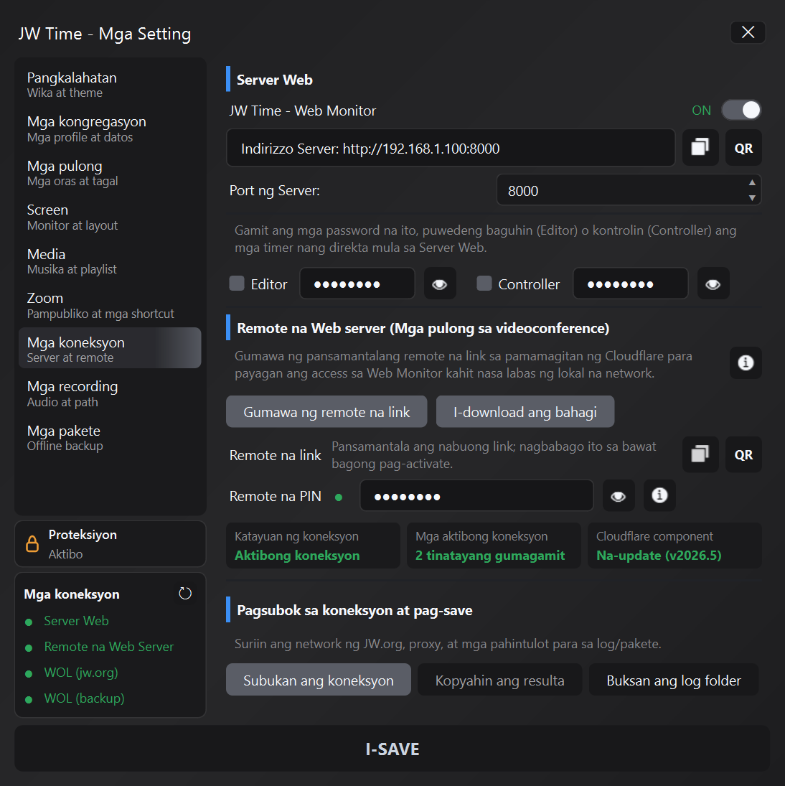
15.1 · Monitor Web at Web Server
JW Time - Monitor Web: pinapagana o pinapatay ang internal na server.
Address ng Server: ipinapakita ang URL na bubuksan sa lokal na network. Sa manwal gumagamit kami ng generic na address, halimbawa http://192.168.1.100:8000.
Kopyahin ang address: kinokopya ang URL sa clipboard.
QR: nagpapakita ng QR code para mas mabilis na mabuksan ang Monitor Web mula sa telepono o tablet.
Port ng server: itinatakda ang HTTP port, karaniwan ay 8000.
Editor / Controller: pinapagana ang mga password para baguhin o kontrolin ang timer at programa mula sa browser. Sa role na Controller, ang Monitor Web ay nagiging operational panel din: maaari nitong simulan, i-pause, ihinto at i-update ang mga available na value nang hindi bumabalik sa pangunahing computer.
Idinagdag sa Monitor Web ang kakayahang baguhin ang mga numero ng Awit at ang pangalan ng mga bahagi, sa mode na Editor at sa mode na Controller.
Kapag aktibo ang Web Server, maaaring buksan ang JW Time mula sa ibang device sa parehong lokal na network sa pamamagitan ng browser, para gamitin ang Monitor Web mula sa telepono, tablet o ibang computer.
15.2 · Web Server nang remote
Ginagamit ang seksyong ito para gawing reachable ang Monitor Web kahit nasa labas ng lokal na network, halimbawa habang may mga pulong sa videoconference. Para sa konteksto ng paggamit, tingnan ang seksyon 8.3 · Remote na access para sa mga pulong sa videoconference; dito makikita ang praktikal na mga kontrol.
Gumawa ng remote na link: gumagawa ng pansamantalang link gamit ang Cloudflare component kapag kailangan ng access mula sa labas ng lokal na network.
I-download ang component: dina-download ang component na kailangan para sa remote na koneksyon.
Remote na link: ipinapakita ang ginawang koneksyon at ang mga button na Kopyahin/QR.
Remote na PIN: pinoprotektahan ang access sa mga remote na function kapag naka-configure.
Status ng koneksyon: ipinapakita kung available ang remote component, ang mga aktibong koneksyon at ang Cloudflare.
15.3 · Remote na kontrol
Kung naka-enable ang function, maaaring gamitin ang Web Server hindi lang para sa pagpapakita kundi para magsagawa rin nang remote ng mga operasyon sa timer at programa. Kapag naka-enable ang role na Controller, ipinapakita rin ng web screen ang mga kontrol para baguhin ang mga available na value, halimbawa ang tagal ng isang bahagi.
Kabilang sa maaaring available:
pagsisimula ng timer
pause at pagpapatuloy
stop
kontrol sa programa/iskedyul
Depende sa configuration, maaaring may iba-ibang antas ng access para mahiwalay ang simpleng pagtingin sa mga function ng kontrol o pagbabago.
15.4 · Test ng Koneksyon
Test ng koneksyon: sinusuri ang network, JW.org, proxy at mga pahintulot sa pagsulat.
Kopyahin ang resulta: kinokopya ang resulta ng test para sa tulong o diagnosis.
Buksan ang folder ng log: direktang binubuksan ang folder ng mga log ng app.
Function para sa audio recording ng mga pulong, maa-access mula sa tab na "Mga Recording" sa mga setting at mula sa button na REC sa pangunahing window.
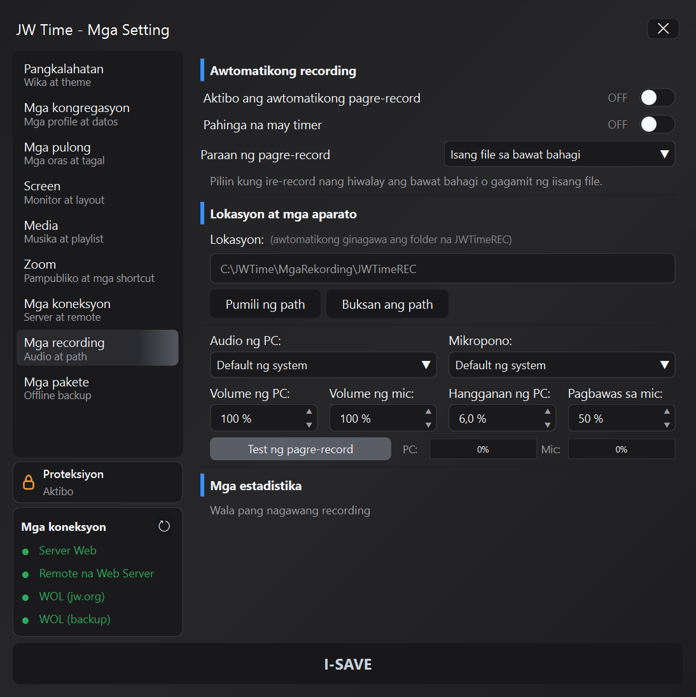
Awtomatikong recording
Aktibo ang awtomatikong pagre-record: sinisimulan ang recording kapag nagsimula ang timer, kung naka-enable ang function.
I-pause ang recording kapag naka-pause ang timer: sinususpinde rin ang recording habang naka-pause ang timer.
Paraan ng pagre-record: pinipili kung isang file bawat bahagi o isang file lang para sa session.
Path at mga device
Path: ipinapakita ang folder kung saan ise-save ang mga file. Sa manwal, ipinapakita ang generic na path.
Piliin ang path: pinipili ang destination folder.
Buksan ang path: binubuksan ang folder ng mga recording.
Audio PC: pinipili ang audio source ng computer.
Mikropono: pinipili ang mikroponong ire-record kasama ng audio PC.
Volume ng PC / Volume ng mic: inaayos ang recorded level ng dalawang source.
Threshold ng PC: itinatakda kung kailan dapat ituring na aktibo ang audio PC.
Pagbawas sa Mic.: awtomatikong binababaan ang mikropono kapag lumampas sa threshold ang audio PC.
Test ng recording: sinusuri ang mga device at level bago ang pulong.
Mga estadistika: nagpapakita ng impormasyon tungkol sa mga ginawang recording.